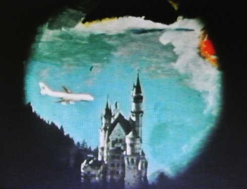
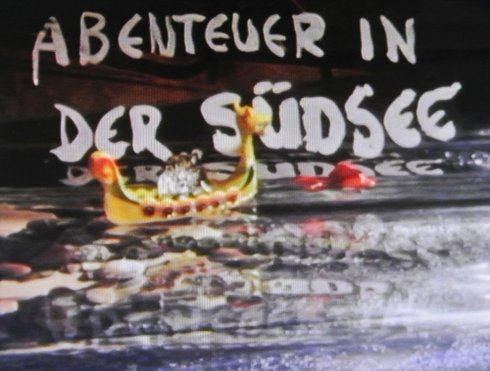
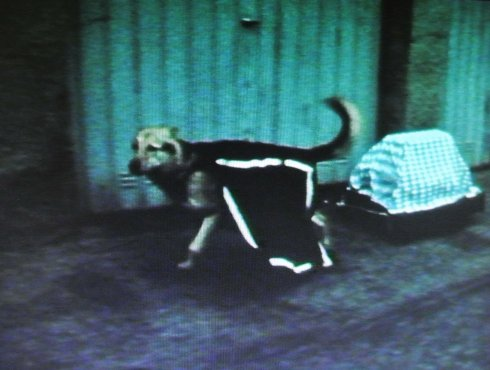
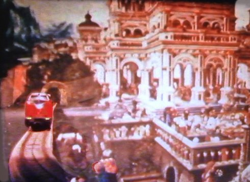
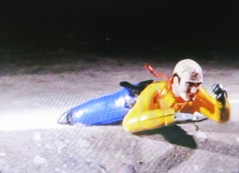

KING KONG KUNSTKABINETT

Walter Amann, Wolfgang Schikora, Ulrich Zierold
Walter Amann, Wolfgang Schikora und Ulrich Zierold lernten sich 1968 während des Studiums an der Akademie der Bildenden Künste München kennen. Seit 1977 arbeiten sie im King Kong Kunstkabinett (München/Frankfurt) zusammen. Ausgangspunkt, Fokus und Besonderheit der Gruppe bleibt über all die Jahre die kollektive Malerei. Es gibt keine Einzelarbeiten. |
Sonntag 14 okt 15.00 werkstattkino
King Kong Kunstkabinett, das ist das Münchner/Frankfurter Künstlertrio Walter Amann, Wolfgang Schikora und Ulrich Zierold, die seit den 70er Jahren mit grandiosem Witz von der Absurdität der Welt erzählen. Das gemeinschaftliche Malen und Zeichnen ist in den Kunstfilmen des Trios gelegentlich dokumentiert; es ist eine der globalen Aufgaben ihres kollektiv forschenden Künstlerbewusstseins.
Das Abenteuer passiert im Labor, auf dem Tisch, und zweimal auf
der Leinwand. Wird es mal zu eng, liegt Antipodien gleich um die
Ecke.
Die Welt kann so klein sein. Eine Linie, ein Strich oft genau so
mutig wie Expeditionen in ferne Zeiten und Räume.
Die Filme — seit 1979 auf analogem Super-8- und 16mm-Material
entstanden — reflektieren Produktionsbedingungen und -prozesse der
Künstler. Der eigene Anspruch bricht sich komödiantisch an den
Herausforderungen der Kunsttheorie. Aber Forschung bedeutet auch
Handwerk. Abseits der Malerei werden in den Filmen munter Objekte
zerlegt, neu verbunden, überformt und auf Trickbühnen animiert.
Die Künstler selbst treten in ihrer alltäglichen
Labor-/Atelierumgebung als Wissenschaftler und Produzenten auf
oder bestehen vorgeblich echte Abenteuer, die jedoch von der Regie
als läppisch enttarnt werden.
Auf Originalton wird komplett verzichtet. Alle Sounds sind im
Studio nachsynchronisiert und Comic-artig überhöht. Zusammen mit
reichen Zitaten aus der Film-, Pop- und Schlagerkultur und
selbstproduzierter Musik, ergibt das temporeiche Toncollagen mit
heftigen Sprüngen und Schnitten.
Auch auf der Bildebene geht es rund. Die gewählten Objekte sind meist spielzeugbunt, der Himmel über der Südsee knallt makellos blau. Nur selten, etwa wenn verrückte Objekte zeigen, was sie können, bleibt die Kamera dran.
(Matthias von Tesmar)
Abenteuer in der Südsee

|
16mm (Blow up) – 30 min Eine Kunstexpedition im großen Maßstab. Zuhause herrscht Eiszeit. Bloß nicht warten, bis die Kunst darunter leidet: Ab in den Süden! Im Zeitraffertempo fliegen wir über die Autobahn, direkt ins nächtliche Geheimlabor. Die Theorie mit der eigenen Kunst zu versöhnen, will und will nicht gelingen, denn „Selbst nach wiederholten Anstrengungen Kunst festzunageln, erheischt diese Autonomie“. Getrieben von launigen und sehnsuchtsvollen Zwischentiteln dieser Art, landet man bald in südlichen Abenteuern. Zwischen Kollektiv und Vereinzelung auf der Suche nach der versöhnten Utopie.
|
Wer will denn als Korkenzieher weiterleben

|
16mm – 5 min – 2. Kamera Dietmar Konnerth Mit Anja und Keefe Ein spektakulärer Trauerfall im Herbst 1988 dient als Folie für eine skurrile Reinszenierung ländlicher bayerischer (?) Totenrituale. Der Sarg des Prominenten wird weiß-blau dekoriert durch die Straßen gefahren, trauerndes Landvolk trifft sich beim Leichenschmaus und ein surreales Fabelwesen durchstreift heidnisch die Natur.
|
Drei Geschwindigkeiten

|
16mm (Blow up) – 6 min Dreimal Geschwindigkeit: Bahn — Auto — Himmel. Ein Spielzeugzug durchfährt ein Diorama mit Landschaftsbildern aus verschiedenen Kunstepochen. Also ist die Geschwindigkeit enorm. Im Auto begleiten wir eine Fahrt aus der Rückbankperspektive. Nur durch ein Seitenfenster ist die Welt in Ordnung, die Frontscheibe zeigt eine um 45 Grad verschobene Blickachse.
|
Getriebe — ein Zirkusfilm

|
16mm – 15 min Obwohl hier (ehemaliges) Spielzeug im Bild ist, ist die Struktur ganz straight: Auf einen poetisch-lustigen Zwischentitel folgt jeweils eine konzentrierte Aktion (elektro-)mechanischer Kleinplastiken. Der künstlerische Eingriff macht die Objekte „menschlicher“. Daher auch konsequent ein Zirkusfilm: Jedes Ding ein Clown, der uns über unsere bitteren Schwächen lachen lässt.
|
Stop and Go
|
16mm – 14 min „Ein Kunstfilm über Quellen und Ausdrücke der Einbildungskraft - ‚orientierungsmäßig‘.“ Im Jahr 2000 telefoniert man natürlich beim Autofahren. Am besten gleich mit mehreren Apparaten gleichzeitig. Aber es ist auch wichtig: Man trifft sich im Atelier. Alte Fundstücke warten dort auf ihren Einsatz und ein automatisches Bild will gemalt sein. Oder lässt man das besser den Robot machen?
|